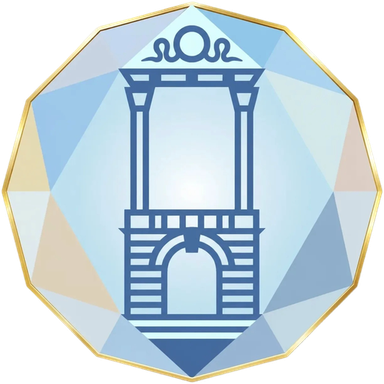

Девять направлений
От архитектуры и истории до языка и здоровья. Каждое направление ведёт свой руководитель. Выберите то, что откликается — или приходите на День Ясны и познакомьтесь со всеми за один день.
Неглинка
Проясняем историю и географию России — гуляем по Москве, читаем то, что зашифровано в улицах.
Рук. · Антон Черномашенцев
Граника
Читаем язык предков в камне — усадьбы, крепости, монастыри и храмовые комплексы. Русский классицизм и деревянное зодчество.
Рук. · Александр АкимовЛитПроСвет
Литература как способ думать и чувствовать. Возвращаем людей к чтению — клубы, аудио-лекторий, разборы классики.
Рук. · Анастасия СкибаИзвод
Утерянные смыслы русских слов. Этимология как практика — возвращаем словам их настоящее значение.
Рук. · Александр ИвановДжива
Здоровье и тело в русской традиции. Дыхание, движение, голос, уклад — практики возвращения к себе.
Рук. · Екатерина БеловаПарад Красоты
Красота, лад и любовь как уклад жизни. Эстетика русской традиции — от образа до отношений между людьми.
Рук. · Вишня СтефароваАлександрия
Теоретическое ядро Ясны. Собираем метод, систему понятий и основания, на которых держатся все направления.
Рук. · Тимур ФахрутдиновГеральдика
Родовые знаки, гербы и символика. Читаем язык образов — что и зачем зашифровано в гербах городов и родов.
Рук. · Алексей ГрачёвЯсна-Школа
Образовательный центр сообщества. Материалы, курсы и занятия — мир глазами предков для детей и взрослых.
Рук. · Сергей АрхиповСейчас открыт набор в Неглинку и Гранику. Остальные направления — на этапе формирования: руководители набирают первых участников. Подпишитесь на канал и будьте среди первых.
Как живёт Ясна
Тут встречаются, исследуют и внедряют наработки в свою жизнь.
Раз в 1–2 недели
В Москве, онлайн или вместе.
Разные форматы встреч
Прогулка, беседа, мастерская, лаборатория, совместное чтение.
Без ступеней и иерархии
Кто пришёл раньше — помогает.
Когда все вместе
Раз в год — День Ясны. Между ними — праздники и поездки.
Четыре опоры. Один круг.
Не иерархия — взаимная ответственность. На этой конструкции держится и семья, и страна. Один из примеров того, как мы разбираем привычные вещи на занятиях.
Это пример, не догма. Подобные разборы рождаются в каждом направлении — язык, праздники, история, тело. Не «как было», а почему держится.
Частые вопросы
Как устроено сообщество?
Русская Ясна — открытое сообщество исследователей. У нас нет иерархии или обязательных взносов. Вы подписываетесь на каналы направлений, участвуете в обсуждениях и встречах в удобном ритме. Можете прийти на открытую встречу, посмотреть материалы и решить, подходит ли вам формат. Все публикации доступны бесплатно.
Сколько это стоит?
Подписка на каналы и участие в открытых встречах — бесплатно. Натурные уроки (прогулки, экскурсии) и специальные курсы могут быть платными — обычно от 500 до 2000 ₽. Точные цены указаны в анонсах каждого мероприятия.
Какие правила и обязательства внутри?
Никаких формальных. Русская Ясна — образовательное сообщество без иерархии, взносов или обязательных ритуалов. Вы свободно приходите и уходите, выбираете формат участия. Опираемся на факты и совместные исследования, а не на веру или догматы.
С чего начать, если я ничего не знаю?
Подпишитесь на Telegram-канал направления, которое вам откликается. Почитайте материалы. Приходите на ближайшую открытую встречу. Или оставьте заявку — координатор свяжется и подскажет, что подойдёт лучше всего.
Я не в Москве — могу ли участвовать?
Да! Большинство направлений работают онлайн: Извод, Джива, ЛитПроСвет, Александрия, Геральдика, Ясна-Школа. Натурные уроки (Неглинка, Граника) проходят в Москве, но их материалы доступны удалённо.
Сколько времени нужно уделять?
Минимум — 1 час в неделю: чтение материалов и участие в одном обсуждении. Максимум не ограничен. Вы выбираете сами, какие встречи посещать и в каком объёме участвовать.
Могу ли я участвовать в нескольких направлениях?
Конечно. Многие участники совмещают 2–3 направления. Они пересекаются: например, Неглинка связана с Граникой (история города + архитектура), а Извод — с ЛитПроСветом (язык + литература).
Чем это отличается от обычных курсов?
Мы не читаем лекции — мы вместе исследуем. Каждый участник проверяет первоисточники, задаёт вопросы, делится находками. Это совместная работа, а не потребление контента.